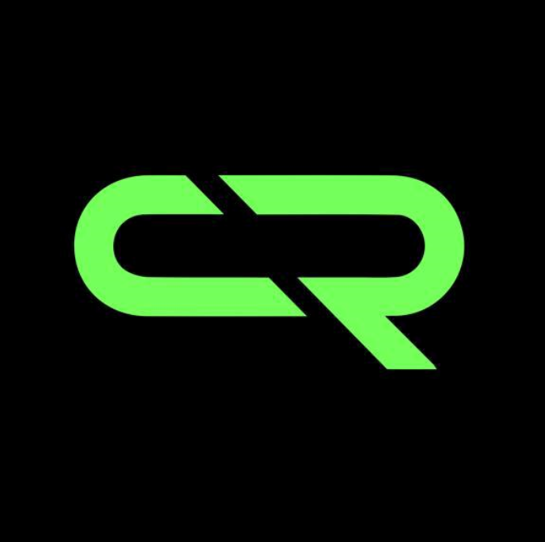
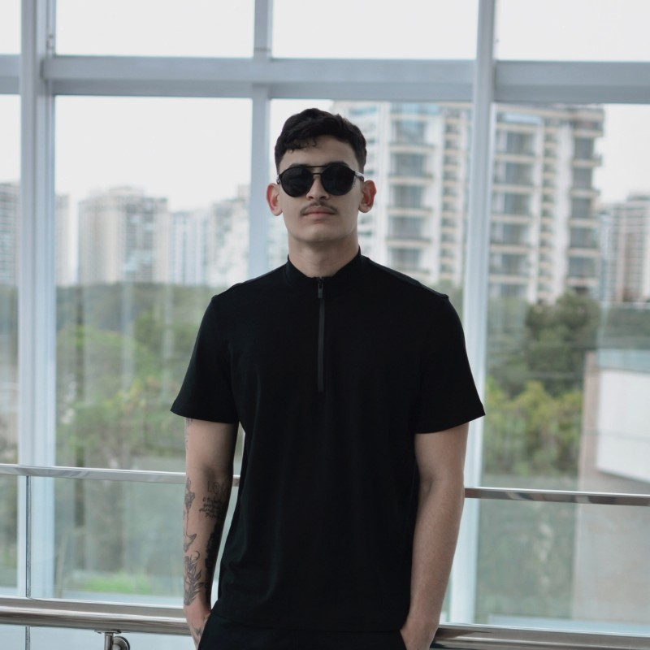
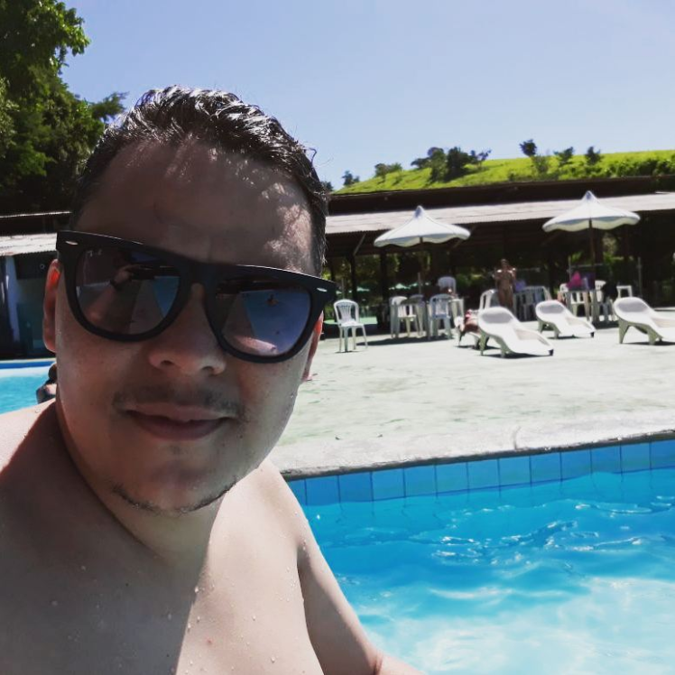

SOBRE

💎CRYPTO ROYALLE💎
Crypto Royalle é uma comunidade de criptomoedas fundada em 2023 por: Lucas Quintino e Jhonnathan Lopes, com sede no Rio de Janeiro. Sua missão é democratizar o acesso e promover a adoção de criptomoedas em todo o mundo. Com uma abordagem inovadora, a Crypto Royalle oferece aos seus membros uma comunidade de investidores/trades de criptomoedas, com foco em passar conhecimento, informações, dicas, analises, notícias e gerar networking. A comunidade permite que os usuários interajam e compartilhem conhecimentos, proporcionando oportunidades emocionantes para todos os entusiastas de criptomoedas.
Fundadores:

Lucas Quintino
Acadêmico de Sistemas de Informação - UVA | Analista de Dados - BNDES | Blockchain Advanced | Trader de Derivativos | Aspirante a Desenvolvedor

Jhonnathan Lopes
Empresario | Blockchain Advanced | Trader de Derivativos | Gestor de Trafego
Para Mais Informações, navegue pelas Paginas.